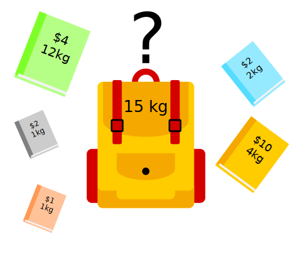
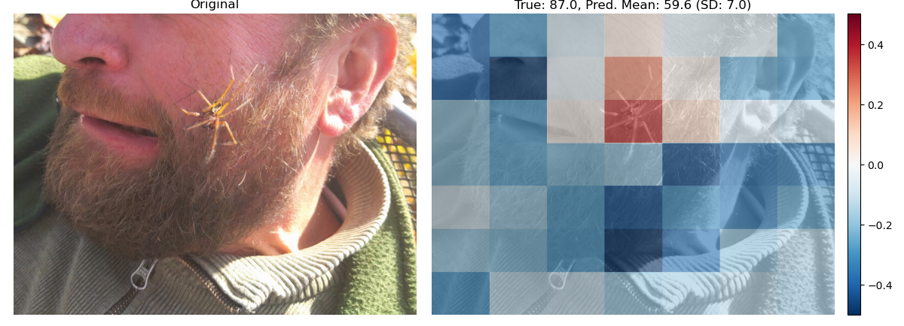
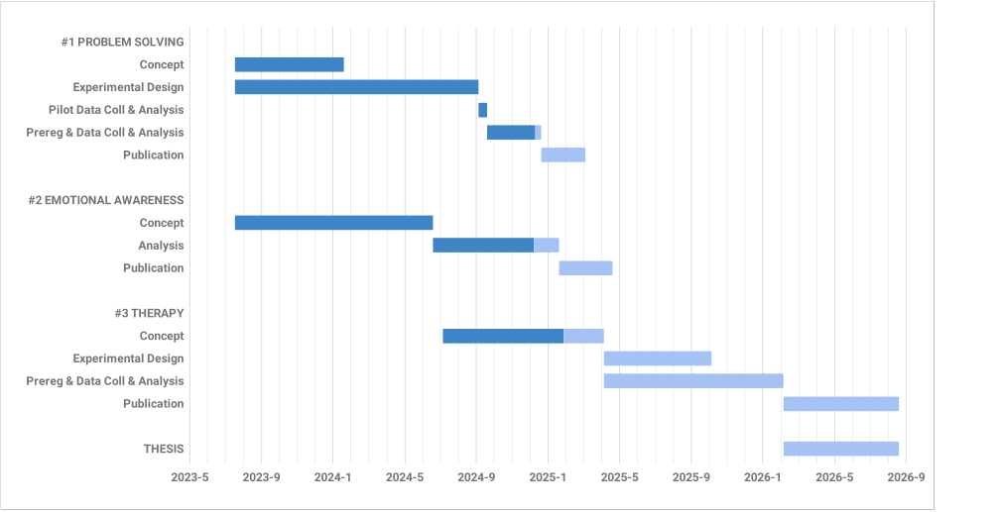

Machine Learning for Human-Centered Solutions
Interpretability, Emotion Recognition, and Therapeutic Innovation
Dominik Pegler
Overview


#1
INTERPRETABILITY OF MACHINE-GENERATED SOLUTIONS TO COMBINATORIAL DESIGN PROBLEMS
Problem Setting
Machine Problem-Solving
- Increasingly taking over human domains
- AI getting more complex → black boxes → lack of trust
- Trust issues not new (Classical AI in 1950s)

George Dantzig (1914-2005), father of linear programming
“George Dantzig.” under CC0 1.0; from malevus.com
Evaluating Human Interpretability
- Human-in-the-loop approach to evaluate interpretability
- Understanding how a machine makes a decision
- Critical for trust and collaboration with machines

Human-in-the-loop: Enhanced algorithms through continuous human input.
“Human-in-the-loop” by Dominik Pegler under CC BY-SA 2.5 Generic; from Created using Google Docs
Combinatorial Design Problems

Knapsack Problem
“Knapsack” by Dake~commonswiki and Keenan Pepper under CC BY-SA 2.5 Generic; from Wikimedia Commons
{kind=link}
{kind=link}
Minimum Spanning Tree
“Traveling Salesmans” by Dcoetzee under Public domain; from Wikimedia Commons
{kind=link}
{kind=link}

Traveling Salesman Problem
“Traveling Salesmans” by Xypron under Public domain; from Wikimedia Commons
{kind=link}
{kind=link}
- Many real-world scenarios (logistics, etc.)
- Can be solved by machines optimally (e.g., with Linear Programming)
- Can be solved by humans (if problem is small enough)
→ Good setting for human-machine collaboration
Bin-Packing Problem
- Abstract representation of real-world scenarios (e.g., scheduling)
- Pack items into boxes
- Goal: Fill the boxes as much as possible
- Constraint: You cannot overfill the boxes

Figure 1: A human performing the bin packing task.
Optimal Solutions
Figure 2: The machine (CP-SAT) providing possible optimal solutions.
Question
"What makes a solution interpretable?"
H1: Heuristic
- Humans use (greedy) heuristics → greedy solution
- Similarity to greedy solution is measured by graph edit distance(Sanfeliu & Fu, 1983)

→ Solutions more interpretable if similar to greedy solution
H2: Simplicity
- Bins can look more or less simple/complex
- Formalized as log-probability that a mixture model (2 dirichlet, 1 geometric distribution) returns for each bin composition

→ Solutions more interpretable if simple
H3: Representation
- Items and boxes can be sorted by size or at random
- Formalized as rank correlation between the actual order and the sorted order

→ Solutions more interpretable if sorted
Online-Experiment

N = 73 participants (pilot)
Online-Experiment

N = 73 participants (pilot)
Pilot Results

Figure 3: Fixed Effects Estimates of Predictor Variables on Choice in Multilevel Analysis. The plot displays the estimated fixed effects (with 95% confidence intervals) for the three predictors. The effects are adjusted for random effects at the group level, highlighting the marginal impact of each predictor on the outcome variable 'choice'.
- All three predictors relevant for people's choices
- Order and Heuristic most influental
- Moderate effect: R²=0.17 (Cohen, 1988)
Other findings:
- Considerable participant variability in all predictors
- Self-reported problem-solving skills ("PSI") and solving performance do not moderate choice
Pilot Results Eye-tracking
- Gaze dwell times predictive of choice (r = 0.20)
- Δ t = trightbox - tleftbox
- Webcam-Eye-Tracking using WebGazer.js
Figure 4: Heatmap indicating gaze dwell times during an evaluation trial.

Figure 5: Correlation (with 95% confidence interval) of gaze dwell time (right versus left) with the outcome variable 'choice', highlighting the relationship between where participants direct their gaze and their choices.
Limitations
- Did we measure interpretability?
- Focus on small problems (diversity of solutions limited)
- Only tested for optimal solutions, no suboptimal solutions
- Eye-Tracking via webcam very noisy
Possible next steps
Takeaways
- Humans seem to use solving heuristics during evaluation
- Adequate visual representation is requirement
- All factors may play a bigger role in larger problems
- Validation required
This project is supported by www.ffg.at
#2
LEARNING AND LOCALIZING FEAR WITH COMPUTER VISION MODELS

Problem Setting
Background: "Affective Computing" (Picard, 1997)
- Technology that relates to, arises from, or influences emotions
- For effective and natural human-computer interactions, computers must not only recognize but also respond to human emotions
Our study: Phobia Research
- Aim: Advance computer-aided exposure therapy
- Focus: Spider phobia
Affective Computing (1997) by Rosalind Picard.
“Affective Computing (1997).” under All rights reserved or Unknown licensing information; from https://www.penguin.com.au/
{kind=link}
Problem Setting

Figure 6: The stimulus set.

Figure 7: Rating the fear level of each image.
Figure 8: Example rated images.
- Spider images for exposure therapy
- Usage requires information, e.g., how much fear they provoke
- Fear ratings for 313 spider images collected
- Problem: Set is limited to 313
- Constantly collecting new fear ratings for each new stimulus not feasible
Deep Neural Networks
- Solution: Use deep neural networks to create larger stimulus sets (LeCun et al., 2015)
- Pre-trained on large datasets (Deng et al., 2009)

Architecture of a convolutional neural network (CNN)
“CNN architecture.” under CC0 1.0; from developersbreach.com
- Transfer Learning (Yosinski et al., 2014): Fine-tune on own data (313 images with fear ratings) → fear rating for any new image
Research questions
Q1: Can a computer vision model built for object recognition learn a latent construct such as fear?
Q1-1: How much data do we need?
Q1-2: What erros will it make?
Q2: How does the model arrive at its judgments and how do they differ from human judgments?
Methodology
Q1: Can a computer vision model built for object recognition learn a latent construct such as fear?
- Find suitable deep learning architecture (timm.fast.ai)
- Write training pipeline + train model
- Learning curve analysis: Train multiple times with different amounts of data
- Error analysis: Which images are difficult to predict
Q2: How does the model arrive at its judgments and how do they differ from human judgments?
- Explain predictions: Highlight fear-relevant regions in each image using Gradient-weighted Class Activation Mapping (Grad-CAM; Selvaraju et al., 2020)
- Alignment analysis: How do the model's judgments differ from human judgments (uncertainty, fear-relevant regions)
Preliminary Results

Figure 9: Predictive performance of the CNN model for each image.
- Promising predictive accuracy
- Model: ResNet50 (He et al., 2015)
- Training is possible on standard PC hardware (hours–days)
Preliminary Results
Explanations with Grad-CAM (Selvaraju et al., 2020)

Preliminary Results
Explanations with Grad-CAM (Selvaraju et al., 2020)
Preliminary Results
Explanations with Grad-CAM (Selvaraju et al., 2020)
Preliminary Results
Explanations with Grad-CAM (Selvaraju et al., 2020)
Preliminary Results
Explanations with Grad-CAM (Selvaraju et al., 2020)

Preliminary Results
Explanations with Grad-CAM (Selvaraju et al., 2020)
Preliminary Results
Explanations with Grad-CAM (Selvaraju et al., 2020)
Preliminary Results
Explanations with Grad-CAM (Selvaraju et al., 2020)
Preliminary Results
Explanations with Grad-CAM (Selvaraju et al., 2020)
Preliminary Results
Explanations with Grad-CAM (Selvaraju et al., 2020)
Summary
- Computer vision models can learn latent construct like fear (Q1)
- Explanations for model’s judgments often, but not always, understandable (fear-eliciting stimulus not highlighted) (Q2)
- Pending tasks:
- Explore more architectures
- Error analysis
- Learning curve analysis
- Investigate the overlap between the model's and human judgments
#3
LEARNING OPTIMAL EXPOSURE THERAPY PROTOCOLS WITH REINFORCEMENT LEARNING
Problem Setting
- …
- …
- Reinforcement Learning (RL; Sutton & Barto, 2018)
Schedule

Summary
- …
- …
- …